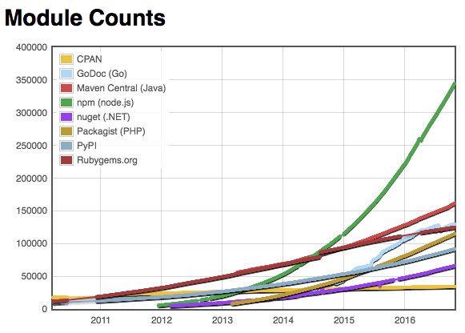
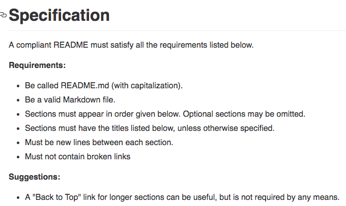

<!doctype html>
<html>
	<head>
		<meta charset="utf-8">
		<meta name="viewport" content="width=device-width, initial-scale=1.0, maximum-scale=1.0, user-scalable=no">

		<title>reveal.js</title>

		<link rel="stylesheet" href="css/reveal.css">
		<link rel="stylesheet" href="css/theme/black.css">

		<!-- Theme used for syntax highlighting of code -->
		<link rel="stylesheet" href="lib/css/zenburn.css">

		<!-- Printing and PDF exports -->
		<script>
			var link = document.createElement( 'link' );
			link.rel = 'stylesheet';
			link.type = 'text/css';
			link.href = window.location.search.match( /print-pdf/gi ) ? 'css/print/pdf.css' : 'css/print/paper.css';
			document.getElementsByTagName( 'head' )[0].appendChild( link );
		</script>
	</head>
	<body>
		<div class="reveal">
			<div class="slides">
				<section data-markdown>
					<script type="text/template">
						## `standard-readme`

						**@richlitt**

						Maintainer.io

						<aside class="notes">
						I am here to talk about standard-readme, a specification I made that specifies how a README should look. But first,
						</aside>
</script>
</section>
<section data-markdown>
<script type="text/template">
## What is a README?

<aside class="notes">
Super simple. It's the first document that anyone should read about your repo. When someone finds your code somwehre on the internet, chances are it is the first thing they are going to see. They may have already read some metadata from your package.json, fomatted on the NPM site. Or they may have read something else about your code, somewhere on GitHub. But if they're looking at your package page on npm, or your repository on GitHub -- they will be looking at your README. You have their undivided attention, for a couple of seconds (or less).

If it were a book, it'd be the cover. If your software is a service, your README is the marketing website.
</aside>

</script>
</section>
<section data-markdown>
<script type="text/template">
## User Questions

- What is this called? <!-- .element: class="fragment" data-fragment-index="2" -->
- What is this? Why should I use it? <!-- .element: class="fragment" data-fragment-index="3" -->
- How do I install it? <!-- .element: class="fragment" data-fragment-index="4" -->
- How do I use it? <!-- .element: class="fragment" data-fragment-index="5" -->
- How do I contribute? <!-- .element: class="fragment" data-fragment-index="6" -->
- Can I legally use this? <!-- .element: class="fragment" data-fragment-index="7" -->

<aside class="notes">
Your user will have questions for you.
</aside>

</script>
</section>
<section data-markdown>
<script type="text/template">
## What should a README have?

- A title  <!-- .element: class="fragment" data-fragment-index="2" -->
- A description  <!-- .element: class="fragment" data-fragment-index="3" -->
- Installation notes  <!-- .element: class="fragment" data-fragment-index="4" -->
- Usage notes  <!-- .element: class="fragment" data-fragment-index="5" -->
- A contribute section  <!-- .element: class="fragment" data-fragment-index="6" -->
- A license  <!-- .element: class="fragment" data-fragment-index="7" -->

</script>
</section>
<section data-markdown>
<script type="text/template">
## What _could_ a README have?

- A logo
- Badges
- A background section
- A Security notice
- An API section
- Any number of other sections

<aside class="notes">
	{Read}

	That's a lot going on. So, really, our next question is;

</aside>

</script>
</section>
<section data-markdown>
<script type="text/template">
## What would a full README look like?

- Informative <!-- .element: class="fragment" data-fragment-index="2" -->
- Long <!-- .element: class="fragment" data-fragment-index="3" -->
- Pretty cool. <!-- .element: class="fragment" data-fragment-index="4" -->

<aside class="notes">
	If you can find a good one. But you often can't.

	Which is a shame. READMEs are super important, and we've known that for _a LONG time_. Here's a greybeard talking:
</aside>
</script>
</section>
<section data-markdown>
<script type="text/template">

> Your documentation is complete when someone can use your module without ever having to look at its code...

> Remember: the documentation, not the code, defines what a module does.

~Ken Williams, Perl Hackers

<aside class="notes">
> Your documentation is complete when someone can use your module without ever having to look at its code. This is very important. This makes it possible for you to separate your module's documented interface from its internal implementation (guts). This is good because it means that you are free to change the module's internals as long as the interface remains the same.
</aside>

</script>
</section>
<section data-markdown data-background="#ffffff">
<script type="text/template">
## The problem



<aside class="notes">
  Here is a graph showing the size of some of the module repositories out there. It's awesome, in that Open Source is clearly taking off in the past few years. It is also horrifying, because that's a tonne of modules. More than you could ever vet or use.

  And, really, more than anyone should have to. If you look at README quality, let's say it takes ten minutes to make a good README. That's 350,000 modules; that's 7 years. But we all know they take more time to write than that. And more time to maintain.
</aside>

</script>
</section>
<section data-markdown>
<script type="text/template">
## READMEs are difficult!

- Hard to write <!-- .element: class="fragment" data-fragment-index="2" -->
- Hard to maintain <!-- .element: class="fragment" data-fragment-index="3" -->
- Hard to parse <!-- .element: class="fragment" data-fragment-index="4" -->

</script>
</section>
<section data-markdown>
<script type="text/template">
## Standards make it easier

<aside class="notes">
  One of the greatest and worst things about the JavaScript community is how furiously we splash paint on our bikesheds. We've collectively spent centuries arguing about semicolons. Other languages do this too; some communities do it better, some worse. Ideally, we should do it better.
</aside>

</script>
</section>
<section data-markdown>
<script type="text/template">


<aside class="notes">
  How many of you have heard of Standard? Used it? It is a standard for how JavaScript should look, "one styleguide to rule them all". Ultimately, feross, the creator, just decided that he was going to do things a certain, based on his expertise and on listening to contributors, and now a lot of developers follow along, and we can focus on shipping code that matters.
</aside>

</script>
</section>
<section data-markdown>
<script type="text/template">
## `standard-readme`

<aside class="notes">
  That's the point of `standard-readme`. Let's stop spending time cycles on our READMEs, and build a very simple way of enforcing a lower bar on quality.
</aside>
</script>
</section>
<section data-markdown>
<script type="text/template">
## Why did _I_ build this?

There are 250+ repositories at Protocol Labs.
Someone has to maintain them.


(me)


<aside class="notes">
I threw this slide in here because you may be wondering...

... So, I made standard-readme to make this easier on myself.
</aside>
</script>
</section>
<section data-markdown>
<script type="text/template">
## What is in `standard-readme`?

  - A specification <!-- .element: class="fragment" data-fragment-index="2" -->
  - A generator <!-- .element: class="fragment" data-fragment-index="3" -->
  - A linter <!-- .element: class="fragment" data-fragment-index="4" -->
  - A badge <!-- .element: class="fragment" data-fragment-index="5" -->
  - Example templates <!-- .element: class="fragment" data-fragment-index="6" -->

</script>
</section>
				<section data-markdown>
					<script type="text/template">
					## The Spec

					[RichardLitt/standard-readme](https://github.com/RichardLitt/standard-readme)

					What does it look like?
					</script>
				</section>
				<section data-markdown>
					<script type="text/template">
						

						Pretty boring and mildly technical.
					</script>
				</section>
				<section data-markdown>
					<script type="text/template">
					## Spec Overview

					Required:

					- Title <!-- .element: class="fragment" data-fragment-index="2" -->
					- Short Description <!-- .element: class="fragment" data-fragment-index="3" -->
					- ToC (if > 100 lines) <!-- .element: class="fragment" data-fragment-index="4" -->
					- Install <!-- .element: class="fragment" data-fragment-index="5" -->
					- Usage <!-- .element: class="fragment" data-fragment-index="6" -->
					- Contribute <!-- .element: class="fragment" data-fragment-index="7" -->
					- License <!-- .element: class="fragment" data-fragment-index="8" -->

					</script>
				</section>
				<section data-markdown>
					<script type="text/template">
					## Spec Overview

					Optional:

					- Badges
					- Long Description
					- Security
					- Background
					- API
					- Other Sections

					</script>
				</section>
				<section data-markdown>
					<script type="text/template">
					## The Generator

					[RichardLitt/generator-standard-readme](https://github.com/RichardLitt/generator-standard-readme)

					- Uses yeoman <!-- .element: class="fragment" data-fragment-index="2" -->
					- Autofills from package.json <!-- .element: class="fragment" data-fragment-index="3" -->

					</script>
				</section>
				<section data-markdown>
					<script type="text/template">
					## The Linter

					Work in Progress.

					*For now, use human linting.* <!-- .element: class="fragment" data-fragment-index="2" -->

					<aside class="notes">
						Will most likely use wooorm's work with mdast and remark.
					</aside>
					</script>
				</section>
				<section data-markdown>
					<script type="text/template">
						## The Badge

						

					</script>
				</section>
				<section data-markdown>
					<script type="text/template">
					 ## Uptake

					 - Used on standard's README <!-- .element: class="fragment" data-fragment-index="2" -->
					 - Used across the board for Protocol Labs <!-- .element: class="fragment" data-fragment-index="3" -->
					 - 150 ⭐️'s as of today <!-- .element: class="fragment" data-fragment-index="4" -->

					</script>
				</section>
				<section data-markdown>
					<script type="text/template">
						## The Future

						- A workable linter <!-- .element: class="fragment" data-fragment-index="2" -->
						- Automatically run code blocks in a REPL <!-- .element: class="fragment" data-fragment-index="3" -->
						- NLP for relevant sections <!-- .element: class="fragment" data-fragment-index="4" -->
						- More Discussions! <!-- .element: class="fragment" data-fragment-index="5" -->
						- More beautiful READMEs!! <!-- .element: class="fragment" data-fragment-index="6" -->

					</script>
				</section>
				<section data-markdown>
					<script type="text/template">
						## which means

						- Time to focus on harder problems <!-- .element: class="fragment" data-fragment-index="2" -->
						- Better searching through repositories <!-- .element: class="fragment" data-fragment-index="3" -->
						- Faster creation of READMEs <!-- .element: class="fragment" data-fragment-index="4" -->
						- Stronger code <!-- .element: class="fragment" data-fragment-index="5" -->
					</script>
				</section>
				<section data-markdown>
					<script type="text/template">
						## Thanks!

						[RichardLitt/standard-readme](https://GitHub.com/RichardLitt/standard-readme)

						[@richlitt](https://github.com/richlitt)

					</script>
				</section>
			</div>
		</div>

		<script src="lib/js/head.min.js"></script>
		<script src="js/reveal.js"></script>

		<script>
			// More info https://github.com/hakimel/reveal.js#configuration
			Reveal.initialize({
				history: true,

				// More info https://github.com/hakimel/reveal.js#dependencies
				dependencies: [
					{ src: 'plugin/markdown/marked.js' },
					{ src: 'plugin/markdown/markdown.js' },
					{ src: 'plugin/notes/notes.js', async: true },
					{ src: 'plugin/highlight/highlight.js', async: true, callback: function() { hljs.initHighlightingOnLoad(); } }
				]
			});
		</script>
	</body>
</html>
